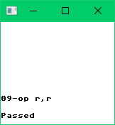

How to write a Game Boy emulator – Part 8: Blargg's CPU test ROMs #1,3,4,5,7,8,9,10,11
This post is part of a blog series about writing a Game Boy emulator.
In the previous part, we emulated Blargg's CPU test ROM #6. In this part, we'll emulate test roms #1,3,4,5,7,8,9,10,11.
The goal is to get these outputs:
| Test rom | SHA-256 hash of the rom & screenshot |
|---|---|
| 01-special.gb |
fe61349cbaee10cc384b50f356e541c90d1bc380185716706b5d8c465a03cf89 |
| 03-op sp,hl.gb |
ca553e606d9b9c86fbd318f1b916c6f0b9df0cf1774825d4361a3fdff2e5a136 |
| 04-op r,imm.gb |
7686aa7a39ef3d2520ec1037371b5f94dc283fbbfd0f5051d1f64d987bdd6671 |
| 05-op rp.gb |
d504adfa0a4c4793436a154f14492f044d38b3c6db9efc44138f3c9ad138b775 |
| 07-jr,jp,call,ret,rst.gb |
ab31d3daaaa3a98bdbd9395b64f48c1bdaa889aba5b19dd5aaff4ec2a7d228a3 |
| 08-misc instrs.gb |
974a71fe4c67f70f5cc6e98d4dc8c096057ff8a028b7bfa9f7a4330038cf8b7e |
| 09-op r,r.gb |
b28e1be5cd95f22bd1ecacdd33c6f03e607d68870e31a47b15a0229033d5ba2a  |
| 10-bit ops.gb |
7f5b8e488c6988b5aaba8c2a74529b7c180c55a58449d5ee89d606a07c53514a |
| 11-op a,(hl).gb |
0ec0cf9fda3f00becaefa476df6fb526c434abd9d4a4beac237c2c2692dac5d3 |
You'll have to implement missing CPU instructions. It's not the most fun work, but it's necessary work. There are a couple of gotchas along the way.
POP AF
The first time I ran test rom #8, I got this output:
The output is a bit cryptic, but it means opcode 0xF1 is wrong. 0xF1 corresponds to the instruction POP AF. As you know, F is the flag register. The bits 7,6,5,4 are the flags Z,N,H,C but what about the other bits? Turns out they always return 0. I fixed that and the test passed.
Differences with the Z80
The Game Boy CPU is similar but different than the Z80.
Opcodes 0xE8 and 0xF8 are Game Boy specific instructions. The way they set the carry flags is a bit weird: you have to use the lowest byte of the 16-bit value, and use the immediate signed 8-bit value as unsigned. Here's how I implemented the two instructions:
// pandocs.htm
// add SP,dd E8 16 00hc SP = SP +/- dd ;dd is 8bit signed number
// http://forums.nesdev.com/viewtopic.php?p=42143#p42143
var ADD_E8 = operation{"ADD", func(st *st, x rw_u16, y r_i8) {
v1 := x.get(st)
v2 := y.get(st)
b1 := u8(v1)
b2 := u8(v2)
result := u16(int(v1) + int(v2))
x.set(st, result)
F.Z.set(st, false)
F.N.set(st, false)
F.H.set(st, halfCarry_u8(b1, b2, false))
F.C.set(st, carry_u8(b1, b2, false))
}}
// pandocs.htm
// ld HL,SP+dd F8 12 00hc HL = SP +/- dd ;dd is 8bit signed number
// http://forums.nesdev.com/viewtopic.php?p=42143#p42143
var LD_F8 = operation{"LD", func(st *st, x w_u16, y SP_imm_i8) {
v1 := y.v1().get(st)
v2 := y.v2().get(st)
b1 := u8(v1)
b2 := u8(v2)
result := u16(int(v1) + int(v2))
x.set(st, result)
F.Z.set(st, false)
F.N.set(st, false)
F.H.set(st, halfCarry_u8(b1, b2, false))
F.C.set(st, carry_u8(b1, b2, false))
}}These instructions have subtle differences in how they set their flags: CCF, RLA, RLCA, RRA, RRCA.
The DAA instruction also works differently. I had to lookup how to implement it:
// http://forums.nesdev.com/viewtopic.php?f=20&t=15944#p196282
var DAA = operation{"DAA", func(st *st) {
a := A.get(st)
if !F.N.get(st) {
if F.C.get(st) || a > 0x99 {
a += 0x60
F.C.set(st, true)
}
if F.H.get(st) || a&0x0F > 0x09 {
a += 0x06
}
} else {
if F.C.get(st) {
a -= 0x60
}
if F.H.get(st) {
a -= 0x06
}
}
A.set(st, a)
F.Z.set(st, a == 0x00)
F.H.set(st, false)
}}Carries and borrows
When an instruction fails a test, it's usually the flag setting that's wrong. Here are the helper functions I use to set the carry and borrow flags:
func carry_u8(x, y u8, z bool) bool {
result := int(x) + int(y) + int(u8FromBool(z))
return result > 0xFF
}
func halfCarry_u8(x, y u8, z bool) bool {
result := (x & 0x0F) + (y & 0x0F) + u8FromBool(z)
return result > 0x0F
}
func carry_u16(x, y u16) bool {
result := int(x) + int(y)
return result > 0xFFFF
}
func halfCarry_u16(x, y u16) bool {
result := (x & 0x0FFF) + (y & 0x0FFF)
return result > 0x0FFF
}
func borrow(x, y u8, z bool) bool {
result := int(x) - int(y) - int(u8FromBool(z))
return result < 0
}
func halfBorrow(x, y u8, z bool) bool {
result := int(x&0x0F) - int(y&0x0F) - int(u8FromBool(z))
return result < 0
}